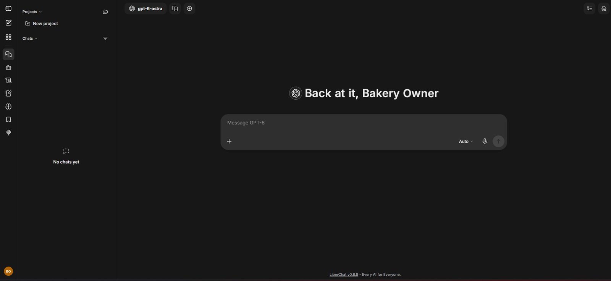
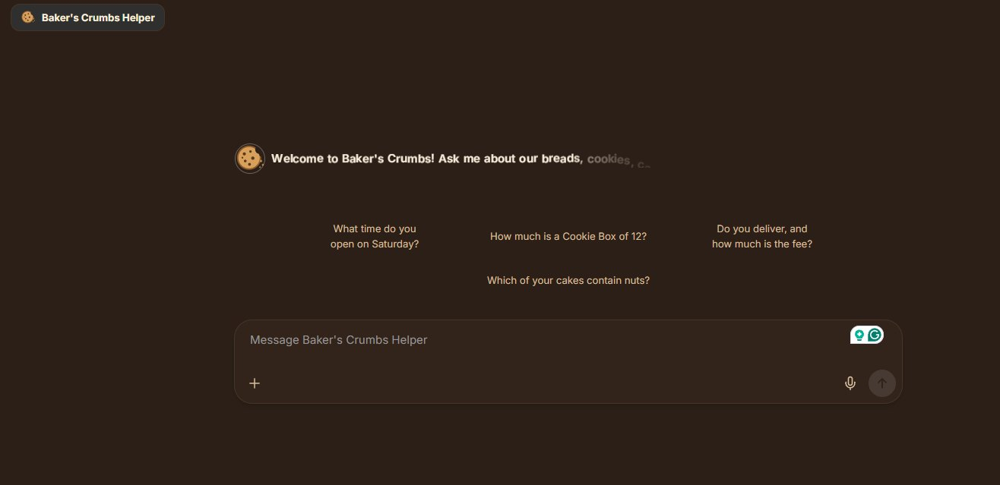
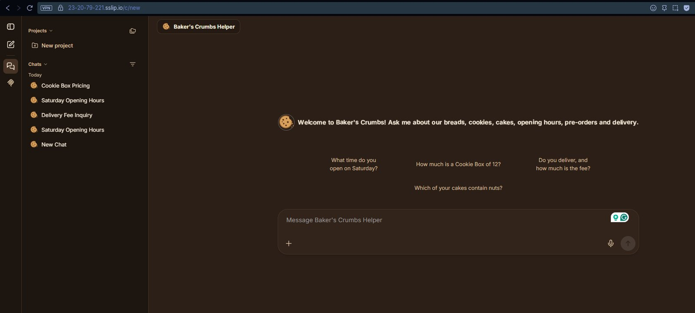
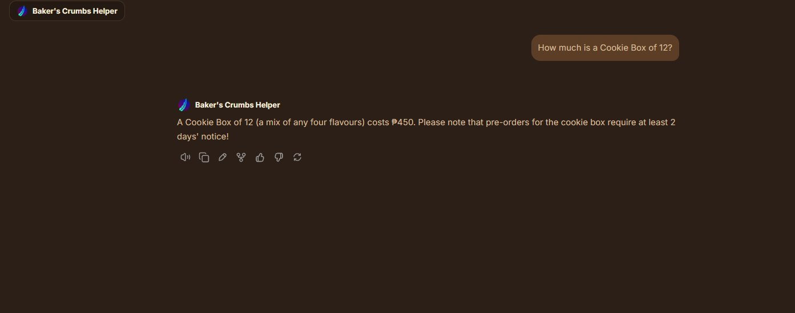

Your system and the system card
The reskin: before and after






System card: Baker's Crumbs
1. What it does
Baker's Crumbs answers customers' questions about an invented bakery: menu and prices, opening hours, pre-orders, delivery and ingredients. It answers only from the bakery's own documents and is told to say when it doesn't know.
2. Who uses it, and who must not
- Intended users: customers of the (invented) bakery with everyday questions.
- Explicitly NOT for: allergy or medical decisions (it tells users to confirm with staff), taking orders or payments, or any decision about an identifiable person.
3. Base system
| Name and version | LibreChat v0.8.9 (main branch, commit 4700c44eb, cloned 23 Nov 2026) |
|---|---|
| Source URL | https://github.com/danny-avila/LibreChat |
| Author | Danny Avila and the LibreChat contributors |
| Licence | MIT: LICENSE (it allows modification and rebranding with the notice kept) |
| What it did originally | A general-purpose ChatGPT-style chat app that connects to many AI providers |
4. What I changed (the reskin)
| Part | Original | Mine | Why |
|---|---|---|---|
| Name/branding | LibreChat name, logo, grey theme | "Baker's Crumbs", my own cookie logo and browser icons, chocolate-and-cream theme in light and dark mode | A stranger should not recognise the original |
| Data/content | None, general chat | 5 invented bakery documents (hours, menu, ordering, allergens, policies) stored in S3 | The assistant answers only from my own content |
| Wording/prompts | Generic chat wording | "Baker's Crumbs Helper", bakery welcome, four bakery conversation starters, instructions with 6 rules (only use documents, allergy warning, no orders, no personal data) | Domain language of a bakery |
| Interface | Model picker, presets, agents, prompts, bookmarks, memories, sharing | All hidden; one enforced assistant; auto-titles off | Customers need one simple assistant; fewer AI calls |
| AWS services | Runs anywhere with Docker | EC2, S3, Parameter Store, Session Manager, CloudWatch, SNS, IAM, CloudTrail, Budgets | Hosting, data and operations on AWS |
5. Data
- Source: written by me; entirely invented (fictional bakery, address, phone and email). Licence: my own work. Copy in the repository's
content/folder. - Size and format: 5 Markdown files, about 6.4 KB.
- Anything personal: no, all invented. The only app account is
owner@bakerscrumbs.example. - Sent to a third-party AI service: each question plus the bakery documents go to Google Gemini (free tier, which Google may use to improve its models), which is why only invented data and test questions are used.
6. How good it is
- The one number: correct on 4 of 6 test questions.
- How measured: six questions in new chats on 23 Nov 2026, each answer compared by hand with the bakery documents (Results).
- Covered: hours, prices, delivery, allergens, cancellation policy and an out-of-scope question.
- An example it gets wrong: asked "Do you sell pizza?", it said "we don't sell pizza". That was a guess, because pizza is not in the documents; it should have said it doesn't know and given the contact email.
7. How it is served
- Where it runs: Amazon EC2 m7i-flex.large, us-east-1, Docker.
- What calls it: https://23-20-79-221.sslip.io (LibreChat web app; chat API under
/api/agents). - Model: Google
gemini-3.5-flash-lite, Gemini API free tier, through Google's OpenAI-compatible endpoint. - If the model or service is unavailable: the chat shows a red error box (e.g. "status 404" or "exceeding a rate or spending limit"); the failed-answers alarm and the 15-minute health check email the operator.
8. Limitations and risks
- Cannot: take orders or payments, check stock, or know anything not in its documents.
- Can be wrong: it sometimes fills gaps with plausible guesses (pizza) or opens with a misleading "Yes" (cake cancellation).
- Data risk: if the documents are outdated, so are its answers.
- Misuse: people may ask unrelated questions or try to make it ignore its instructions.
- Free-tier limits: bursts of questions can hit Google's rate limit (incident 2).
- Users must always check: allergen and ingredient information with staff before eating.
9. Operational summary
- Code: https://github.com/haavikthaffeiamharei-hue/bakers-crumbs-ops
- Backups: database every hour to S3, kept 7 days; content in a versioned S3 bucket.
- How we know it's healthy: 9 CloudWatch alarms (CPU, status check, disk, memory, HTTP 5xx, failed answers, empty answers, slow answers, health check) and the BakersCrumbs dashboard.
- Contact: Thaffeia Mharei T. Haavik.